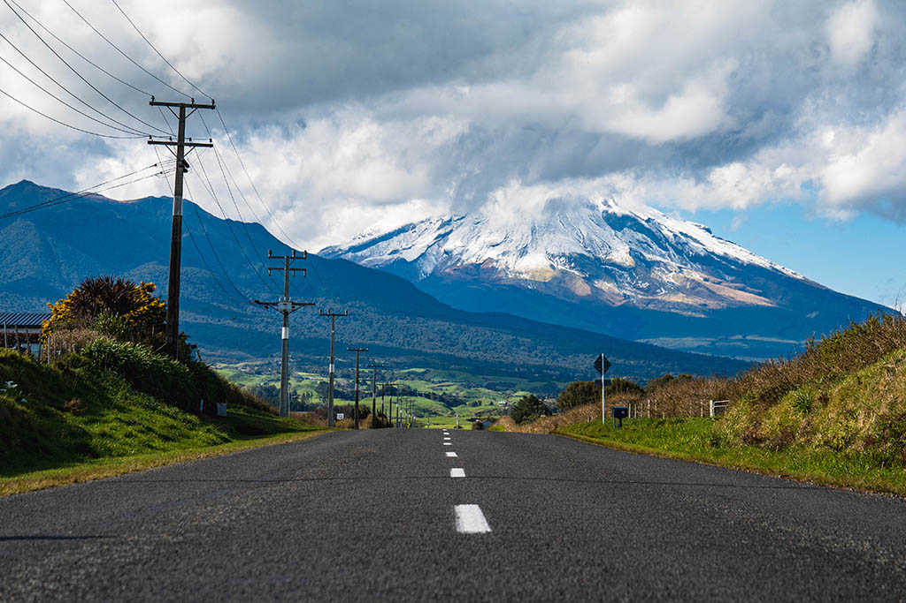
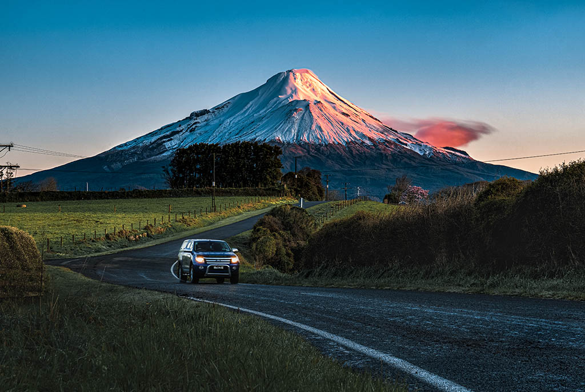
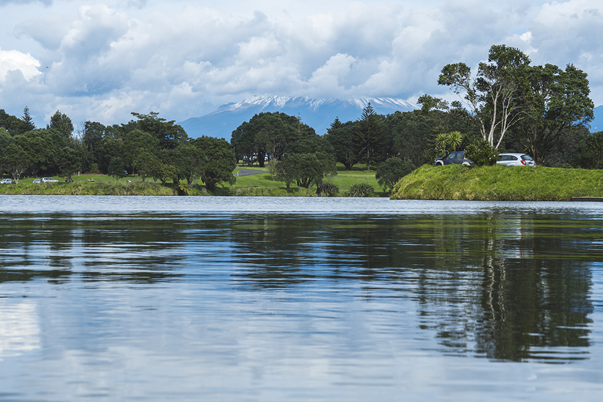

New Plymouth is a vibrant and contemporary city, known for its sunny climate, art galleries, picturesque parks, decadent dining, and family-friendly fun. The conical shape of Taranaki Maunga provides a dramatic backdrop to the city, a constant reminder that the hiking trails of Egmont National Park/Te Papakura o Taranaki are just a short drive away.
Down at the New Plymouth waterfront you'll find Puke Ariki, an innovative museum, library, heritage centre, and information site that contains a wealth of fascinating local history and artifacts. The extraordinary reflective stainless steel Govett-Brewster Art Gallery/Len Lye Centre, in the cultural heart of New Plymouth's West End Precinct, is New Zealand's first and only museum of contemporary art. It is also the nation's first institution dedicated to a single artist, the pioneering filmmaker and kinetic sculptor, Len Lye.
At any time of the year, Pukekura Park is a place to relax and enjoy nature; it has a free children's zoo and a multitude of bush walks. It is also the location for the annual TSB Festival of Lights – a free six-week light display extravaganza during summer.
There's no shortage of family-fun in New Plymouth. Check out the Hillsborough Holden Museum, just a short drive away from the main CBD. Not only can you visit the car museum, but there is also an outdoor luge, mini putt course, and café. Within the CBD is the Bowlarama complex, that includes glow-in-the dark mini putt, and laser tag.
You may also like to stroll along the New Plymouth Coastal Walkway, a 12.7km promenade with stunning views, and several art installations (Wind Wand, Mothers and Daughters, Light on the Land, Big Wave Territory) along the way. Expect good shopping and an impressive selection of bars and restaurants throughout New Plymouth.
 Contact me
Contact me